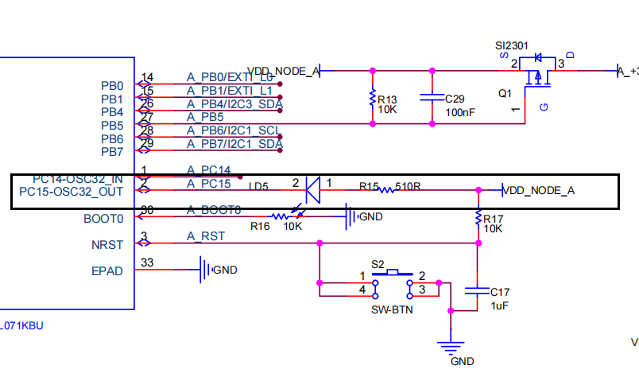
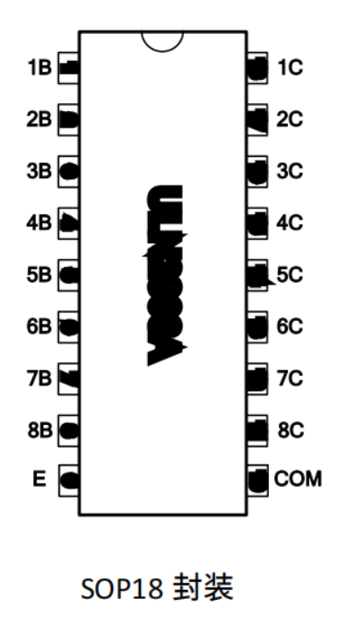
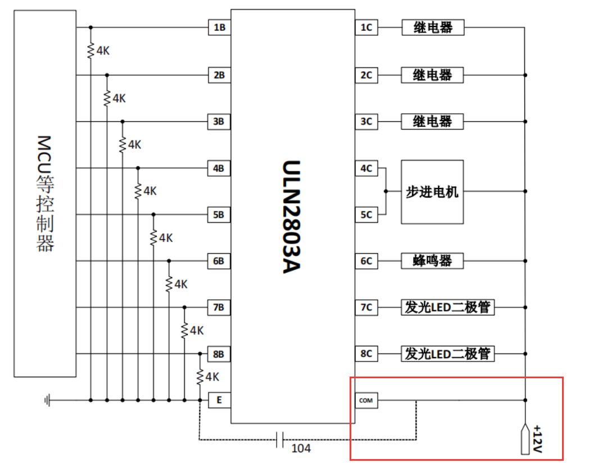
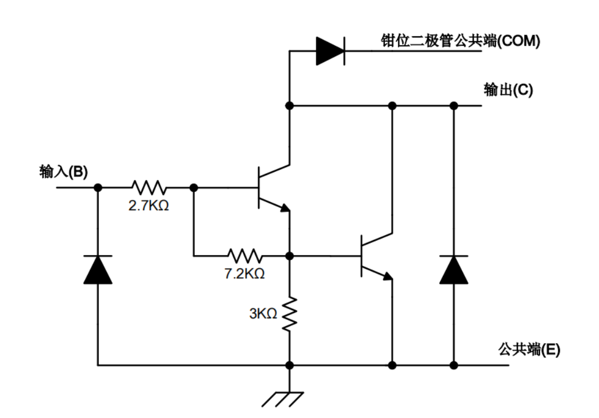
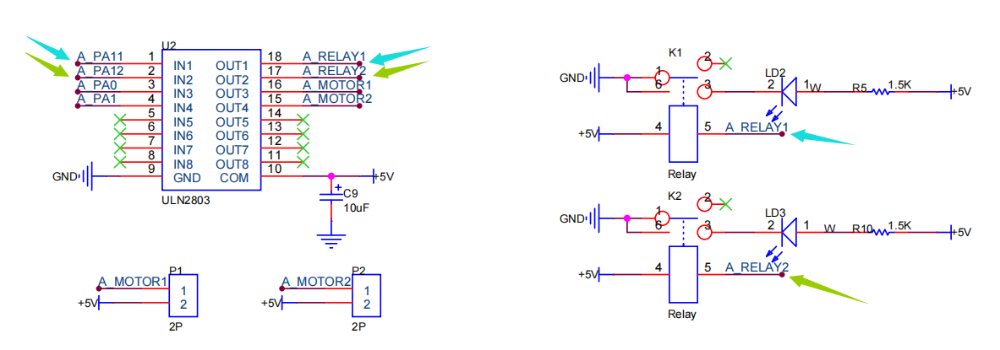
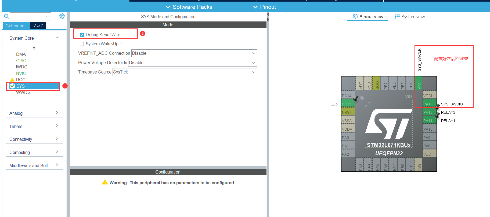
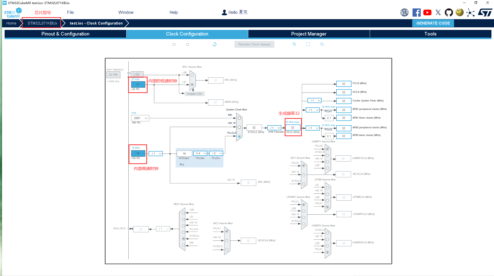
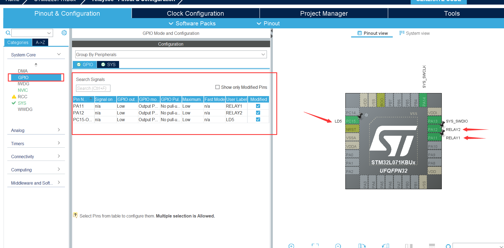
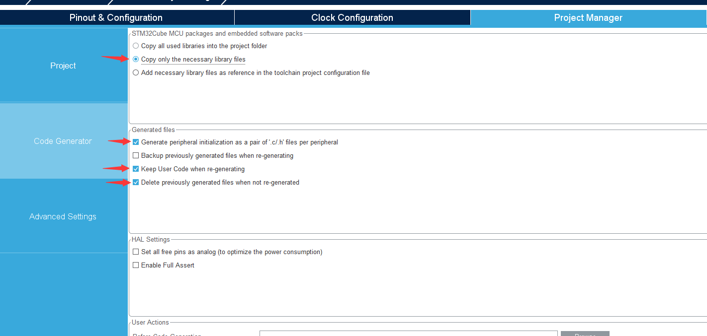
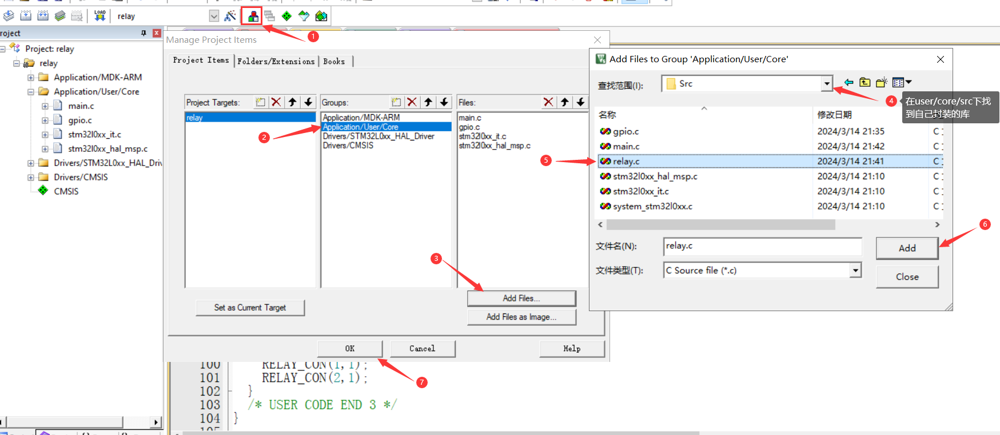

CH1-led relay
CH1 led relay
实验原理
LD5
可以看到原理图中的单片机的PC15引脚接的LD5，当输出低电平的时候LD5亮，当输出高电平的时候LD5灭

ULN2803
ULN2803为一个8路反向电器件，内部为达林顿晶体管阵列，当输入口输入高电平的时候，输出为低电平、当输入口输入低电平的时候，输出为高电平。


运行原理

1.当输入端B输入一个低电平的时候1号与2号三极管的Vbe<0.7v，因此两个三极管都不导通，输出端的电路为开路，负载不工作

2.当输入端B输入一个高电平的时候1号与2号三极管的Vbe>0.7v，因此两个三极管都导通，输出端电路电流从VDD出发通过负载器件再通过2号三极管导通到公共端（E），此时负载工作

继电器layer1、layer2
可以看到原理图中单片机的PA11连接到ULN2803的输入1口，PA12连接到ULN2803的输入2口，因此当PA11输出一个高电平的时候，ULN2803的OUT1输出低电平，A_RELAY1口为低电平，于是继电器1导通，将开关向下吸附住，此时闸刀开关1,3连接，灯LD2打开。PA12同理开发板

配置 CubeMX
芯片型号为：STM32L071KBU6
!!!配置下载线（不要忘记）

时钟树配置
使用内部的高速与低速时钟

IO口配置

输出文件配置

代码
添加自己封装好的库文件

layer.c文件的编写
1 |
|
layer.h文件的编写
1 |
|
main.c部分代码编写
1 |
|
本博客所有文章除特别声明外，均采用 CC BY-NC-SA 4.0 许可协议。转载请注明来源 Kevin's blogs！
相关推荐

2023-09-30
CH10-ADC
CH10-ADC 主板原理图 扩展模块原理图 引脚表 引脚序号 主板引脚 扩展版模块引脚 1 5v 2 PB6 LD1 3 GND GND 4 PB7 LD2 5 ==PB1==（ADC_IN9） AIN1 6 GND GND 7 ==PB0==（ADC_IN8） AIN2 8 PA8 9 VDD_NODE 3V3 10 PB4 STM32L0_参考手册(L0x1).pdf ADC 旨在提供与模拟电源和转换通道上施加的电压之间的比率相对应的数字值。对于大多数应用用例，有必要将该比率转换为独立于 VDDA 的电压。对于 VDDA 已知且 ADC 转换值右对齐的应用，您可以使用以下公式来获取该绝对值：$$\begin{aligned}& {V_{CHANNELx}}= ADCD_ATAx\times \frac{V_{DDA}}{FULL_SCALE} \\end{aligned}$$ ADC_DATAx 是 ADC 在通...
2023-10-05
CH11-NE555
CH11-NE555 主板原理图 扩展模块原理图 引脚表 引脚序号 主板引脚 扩展版模块引脚 1 5v 2 PB6 LD2 3 GND GND 4 PB7 LD1 5 ==PB1==（ADC_IN9） ADC(PR1) 6 GND GND 7 ==PB0==（TIM3 CHANNEL3） PLUS(PR2) 8 PA8 9 VDD_NODE 3V3 10 PB4 CubeMX配置MDK配置 下载线配置 ADC配置 NE555配置 NE555配置NVIC 回调函数 Timer配置 Timer的NVIC配置 SPI配置1 由于SPI配置后只有三个引脚被配置，但数据通信时还有一个Lora通信SPI1_NSS对映的PA4需要配置为低电平 SPI配置2 OLED引脚配置 GPIO引脚配置 RTC配置 USART_DMA配置 USART参数配置 USART中断配...
2023-10-10
CH12-KEYBOARD
CH12-KEYBOARDkeyboard 主板原理图 扩展模块原理图 引脚表 引脚序号 主板引脚 扩展版模块引脚 1 5v 2 ==PB6== ROW_1 3 GND GND 4 ==PB7== ROW_2 5 ==PB1== COLUMN_1 6 GND GND 7 ==PB0== COLUMN_2 8 ==PA8== COLUMN_3 9 VDD_NODE 3V3 10 PB4 ==注意：OLED的IC3需要使用8、10两个序号的引脚，所以需要读取第三列的按键时需要关闭IC3== 温度转换公式（STM32LO_参考手册(LOx1).pdf）$$\begin{aligned}& R H=100 \times \frac{S_{R H}}{2^{16}-1}...
2023-09-13
CH2-EXIT
CH2-EXITEXIT理论EXTIEXTI（Extern Interrupt）外部中断EXTI可以监测指定GPIO口的电平信号，当其指定的GPIO口产生电平变化时，EXTI将立即向NVIC发出中断申请，经过NVIC裁决后即可中断CPU主程序，使CPU执行EXTI对应的中断程序支持的触发方式：上升沿/下降沿/双边沿/软件触发支持的GPIO口：所有GPIO口，但相同的Pin不能同时触发中断通道数：16个GPIO_Pin，外加PVD输出、RTC闹钟、USB唤醒、以太网唤醒触发响应方式：中断响应/事件响应 中断：要进入NVIC，有相应的中断服务函数，需要CPU处理 事件：不进入NVIC，仅用于内部硬件自动控制的，如：TIM、DMA、ADC EXTI基本结构 AFIO简介 中断触发流程 中断触发流程 CubeMX配置时钟配置 时钟配置 下载配置 下载线配置 中断配置1.IO口先选择EXTI 先选择一个IO口进行配置EXTI 2.GPIO配置触发方式 GPIO触发方式配置 3.NVIC寄存器使能 NVIC使能 代码编...
2023-09-14
CH3-usart
CH3-usartUSART概念硬件连接原理CH443KCH443K是SPDT低阻宽带双向模拟开关芯片。CH443K包含1通道SPDT单刀双掷模拟开关，高带宽，低导通电阻，可以用于视频或者USB信号二选一切换。 芯片原理图 芯片引脚说明 内部逻辑电路 CH443K内部的单通道单刀双掷模拟开关SPDT，由SEL 引脚选择进行切换。下表是其控制真值表。 芯片控制真值表 开发板原理图分析由开发板可以看到下载区的电路通过两个CH443K芯片连接A/B两区，当选的A区进行通信时，引脚连接到A区的PA2和PA3，于是我们需要配置该USART通信口 开发板原理图 CubeMX配置 下载线配置 时钟树配置 USART配置 DMA配置 DMA与USART的NVIC配置 NVIC配置 KEIL代码编写注：1.如果需要定义一个变量能在多个文件中使用，我们需要在源文件.中进行定义（可以赋值），在需要调用的文件中使用extern进行声明（禁止赋值） 2.==只有直接通过数组名作为sizeof参数时，输出才是数组长度...
2023-09-16
CH4-rtc
CH4-RTCRTC原理CubeMX配置 下载线配置 RTC配置 USART配置 USART DMA配置 USER按键中断配置 NVIC配置 时钟树配置 MDK程序编写使用BIN码 使用BIN码配置 function.cRTC读取时间函数==注：时间的读取必须要在日期之前，否则发送的时候会发生错误== 1234567891011121314151617181920212223242526//RTC系统时间读取函数，从中读取到日期与时间，且时间是在一直增加的unsigned char *RTC_data(void)//定义一个返回unsigned char指针函数{ static unsigned char rtc_data_read[7];//创建一包含7个unsigned char变量的静态数组：年，月，星期，日，时，分，秒 extern RTC_HandleTypeDef hrtc;//使用外部结构体RTC RTC_TimeTypeDef read_time_data;//定义一...